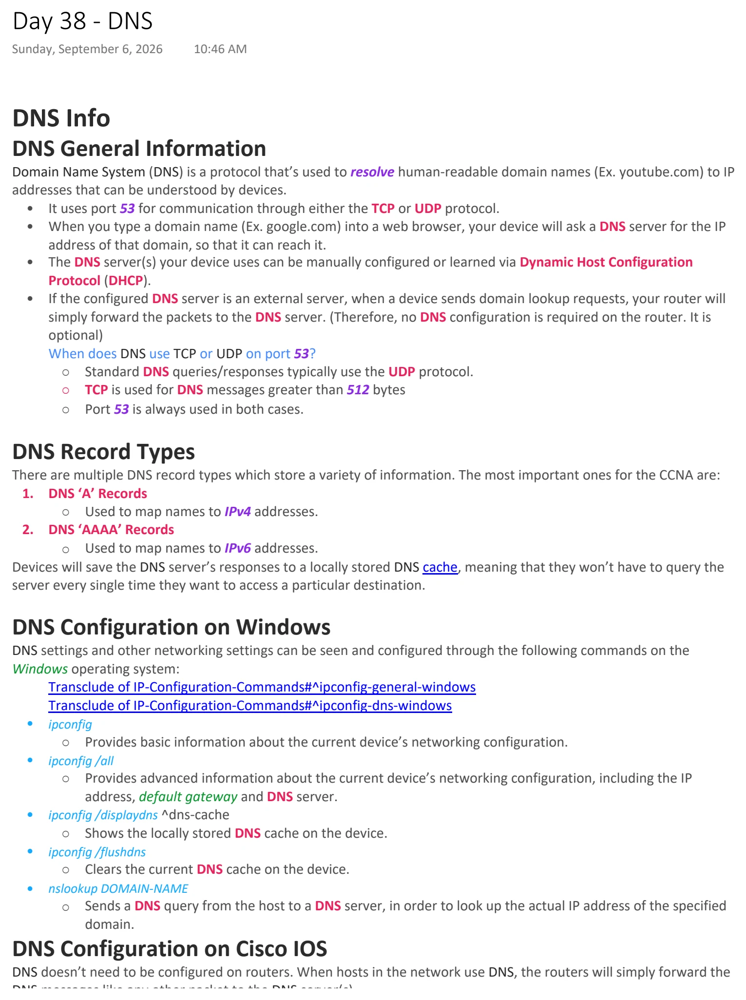
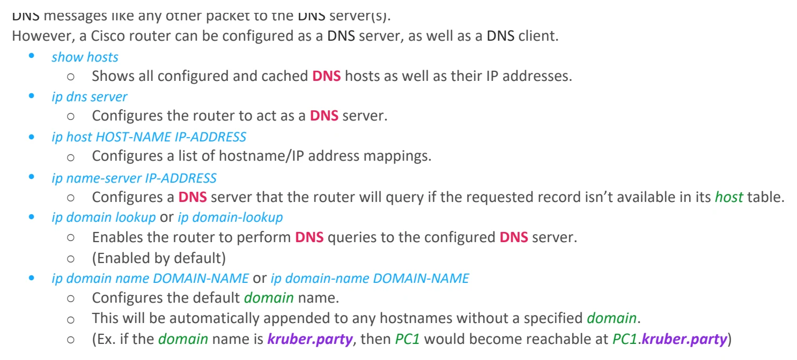

DNS
Download original PDF

Text view — DNS
Extracted from the original export. Diagrams and some formatting appear in the notes above.
Day 38 - DNS Sunday, September 6, 2026 10:46 AM DNS Info DNS General Information Domain Name System (DNS) is a protocol that’s used to resolve human-readable domain names (Ex. youtube.com) to IP addresses that can be understood by devices. • It uses port 53 for communication through either the TCP or UDP protocol. • When you type a domain name (Ex. google.com) into a web browser, your device will ask a DNS server for the IP address of that domain, so that it can reach it. • The DNS server(s) your device uses can be manually configured or learned via Dynamic Host Configuration Protocol (DHCP). • If the configured DNS server is an external server, when a device sends domain lookup requests, your router will simply forward the packets to the DNS server. (Therefore, no DNS configuration is required on the router. It is optional) When does DNS use TCP or UDP on port 53? ○ Standard DNS queries/responses typically use the UDP protocol. ○ TCP is used for DNS messages greater than 512 bytes ○ Port 53 is always used in both cases. DNS Record Types There are multiple DNS record types which store a variety of information. The most important ones for the CCNA are: 1. DNS ‘A’ Records ○ Used to map names to IPv4 addresses. 2. DNS ‘AAAA’ Records ○ Used to map names to IPv6 addresses. Devices will save the DNS server’s responses to a locally stored DNS cache, meaning that they won’t have to query the server every single time they want to access a particular destination. DNS Configuration on Windows DNS settings and other networking settings can be seen and configured through the following commands on the Windows operating system: Transclude of IP-Configuration-Commands#^ipconfig-general-windows Transclude of IP-Configuration-Commands#^ipconfig-dns-windows • ipconfig ○ Provides basic information about the current device’s networking configuration. • ipconfig /all ○ Provides advanced information about the current device’s networking configuration, including the IP address, default gateway and DNS server. • ipconfig /displaydns ^dns-cache ○ Shows the locally stored DNS cache on the device. • ipconfig /flushdns ○ Clears the current DNS cache on the device. • nslookup DOMAIN-NAME ○ Sends a DNS query from the host to a DNS server, in order to look up the actual IP address of the specified domain. DNS Configuration on Cisco IOS DNS doesn’t need to be configured on routers. When hosts in the network use DNS, the routers will simply forward the DNS messages like any other packet to the DNS server(s). However, a Cisco router can be configured as a DNS server, as well as a DNS client. • show hosts ○ Shows all configured and cached DNS hosts as well as their IP addresses. • ip dns server ○ Configures the router to act as a DNS server. • ip host HOST-NAME IP-ADDRESS ○ Configures a list of hostname/IP address mappings. • ip name-server IP-ADDRESS ○ Configures a DNS server that the router will query if the requested record isn’t available in its host table. • ip domain lookup or ip domain-lookup ○ Enables the router to perform DNS queries to the configured DNS server. ○ (Enabled by default) • ip domain name DOMAIN-NAME or ip domain-name DOMAIN-NAME ○ Configures the default domain name. ○ This will be automatically appended to any hostnames without a specified domain. ○ (Ex. if the domain name is kruber.party, then PC1 would become reachable at PC1.kruber.party) Day 38 - DNS Sunday, September 6, 2026 10:46 AM DNS Info DNS General Information Domain Name System (DNS) is a protocol that’s used to resolve human-readable domain names (Ex. youtube.com) to IP addresses that can be understood by devices. • It uses port 53 for communication through either the TCP or UDP protocol. • When you type a domain name (Ex. google.com) into a web browser, your device will ask a DNS server for the IP address of that domain, so that it can reach it. • The DNS server(s) your device uses can be manually configured or learned via Dynamic Host Configuration Protocol (DHCP). • If the configured DNS server is an external server, when a device sends domain lookup requests, your router will simply forward the packets to the DNS server. (Therefore, no DNS configuration is required on the router. It is optional) When does DNS use TCP or UDP on port 53? ○ Standard DNS queries/responses typically use the UDP protocol. ○ TCP is used for DNS messages greater than 512 bytes ○ Port 53 is always used in both cases. DNS Record Types There are multiple DNS record types which store a variety of information. The most important ones for the CCNA are: 1. DNS ‘A’ Records ○ Used to map names to IPv4 addresses. 2. DNS ‘AAAA’ Records ○ Used to map names to IPv6 addresses. Devices will save the DNS server’s responses to a locally stored DNS cache, meaning that they won’t have to query the server every single time they want to access a particular destination. DNS Configuration on Windows DNS settings and other networking settings can be seen and configured through the following commands on the Windows operating system: Transclude of IP-Configuration-Commands#^ipconfig-general-windows Transclude of IP-Configuration-Commands#^ipconfig-dns-windows • ipconfig ○ Provides basic information about the current device’s networking configuration. • ipconfig /all ○ Provides advanced information about the current device’s networking configuration, including the IP address, default gateway and DNS server. • ipconfig /displaydns ^dns-cache ○ Shows the locally stored DNS cache on the device. • ipconfig /flushdns ○ Clears the current DNS cache on the device. • nslookup DOMAIN-NAME ○ Sends a DNS query from the host to a DNS server, in order to look up the actual IP address of the specified domain. DNS Configuration on Cisco IOS DNS doesn’t need to be configured on routers. When hosts in the network use DNS, the routers will simply forward the DNS messages like any other packet to the DNS server(s). However, a Cisco router can be configured as a DNS server, as well as a DNS client. • show hosts ○ Shows all configured and cached DNS hosts as well as their IP addresses. • ip dns server ○ Configures the router to act as a DNS server. • ip host HOST-NAME IP-ADDRESS ○ Configures a list of hostname/IP address mappings. • ip name-server IP-ADDRESS ○ Configures a DNS server that the router will query if the requested record isn’t available in its host table. • ip domain lookup or ip domain-lookup ○ Enables the router to perform DNS queries to the configured DNS server. ○ (Enabled by default) • ip domain name DOMAIN-NAME or ip domain-name DOMAIN-NAME ○ Configures the default domain name. ○ This will be automatically appended to any hostnames without a specified domain. ○ (Ex. if the domain name is kruber.party, then PC1 would become reachable at PC1.kruber.party)